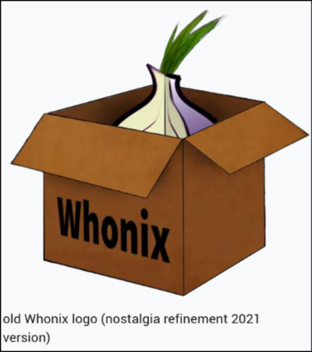

Whonix KVM on NixOS
✔️ Table of Contents
⚠️ WARNING: There is no general software that can guarantee absolute anonymity or security; perfect security is a myth. Security is a continuous process, not a one-time product. It also depends on time and resources: if an adversary has enough of either, eventual compromise is probable. However, by layering defenses and following best practices, we can make attacks costly and time-consuming, deterring all but highly targeted adversaries.
It is highly recommended to harden your Host Machine as Type 2 hypervisors are only as secure as their host. KVM is actually a type 1 hypervisor but relies on QEMU for emulation which is a Type 2 hypervisor. This actually makes it a sort of hybrid in between Type 1 and Type 2 but is in theory less secure than running a Xen hypervisor (Type 1) on bare-metal.
Whonix offers many benefits, including the convenience of running within your current operating system without needing to reboot or use a separate Tails USB. It provides similar strong anonymity protections by routing all traffic through Tor in isolated virtual machines. The Whonix documentation is transparent about its limitations, which helps build trust and confidence in its security model.
-
Tails is great but they add an add blocker to Tor that makes every Tails user unique from the rest of Tor Browser users reducing anonymity.
⚠️ Never rely solely on the Virtual Machine to protect you, if your host OS isn’t secure a Virtual Machine won’t protect you. If you have high threat model, you may want to choose a Host with better support for AppArmor and Selinux as they are highly limited on NixOS.
That being said, there is a lot you can do to harden NixOS…
Harden NixOS and set up GnuPG
A Few Things to Consider when using Whonix
-
No activity conducted inside
Whonix-Workstationcan cause IP/DNS leaks so long asWhonix-Gatewayis left unchanged or only documented changes are made like configuring bridges, establishing onion services and running updates. -
Whonix does not and does not claim to protect users against advanced adversaries such as nation state actors, if they target you, you will be infected! If used correctly, Whonix can provide partial protection against passive surveillance programs, it all depends on whether Tor can provide adequate protection or not, which is not clear at this time.
-
You shouldn’t use a VPN with Whonix and it is obvious that you’re using Tor because connections are made to known Tor Relays, which are publicly listed and identifiable.
⚠️It is impossible to Hide Tor use from the internet service provider (ISP). It has been concluded this goal is difficult beyond practicality. –Whonix Hide Tor from your ISP
-
Millions of people use Tor daily for wholly legitimate reasons, particularly to assert their privacy rights when faced with countless corporate / government network observers and censors.
-
True anonymity is very difficult to successfully pull off and not something that you can maintain for a long time.
üîë Key Terms
Whonix is an operating system based on Debian base (Kicksecure Hardened) and the
Tor network, which is designed for maximum anonymity and security. Whonix
consists of two Debian based VMs, the Whonix-Gateway and Whonix-Workstation.
In this case NixOS is the Host Operating System, NixOS runs the KVM kernel module, libvirtd service, and QEMU virtualization service which together enable hosting VMs. It is recommended to harden the host before moving on.
Guests are the virtualized operating systems running inside the host’s virtual machines. In this case the Whonix VMs are the Guest Machines.
Whonix-Gateway the first of 2 VMs runs Tor processes and forces all traffic
through the Tor network using iptables.
Whonix-Workstation the second VM, is responsible for running user applications
such as the Tor Browser. The Whonix-Workstation is isolated from both the
Whonix-Gateway and the Host OS, if an app misbehaves, it is contained within the
isolated Whonix-Workstation. It is largely unaware of sensitive info and won’t
leak unless an advanced adversary is able to break out of the VM.
The primary goal of Whonix is to be safer than Tor alone and that no one can find out the user’s IP, location, or de-anonymize the user. It offers full spectrum anti-tracking protection that is much safer than VPNs. Whonix provides this through security by isolation, no app is trusted.
Whonix Concept: Whonix is an Isolating Proxy with an additional Transparent
Proxy, which can be optionally disabled. –Whonix Docs
Since Whonix is based on Kicksecure which is based on Debian stable, you can typically look up solutions in a Kicksecure, Debian, or Ubuntu forum.
- The Whonix Team recommends KVM over VirtualBox for a number of reasons:Why choose KVM over VirtualBox
If you really want to use VirtualBox, I got it working off of this config:
VirtualBox = Type 2 hypervisor
✔️ Click to Expand VirtualBox Example
Change your-user to your username
# vbox.nix
{
config,
lib,
...
}: let
cfg = config.custom.virtualbox;
in {
options.custom.virtualbox = {
enable = lib.mkEnableOption "Enable VirtualBox";
};
config = lib.mkIf cfg.enable {
virtualisation.virtualbox.host = {
enable = false;
# enableExtensionPack = true;
};
user.user.your-user.extraGroups = ["vboxusers"];
boot.kernelModules =
if config.hardware.cpu.amd.updateMicrocode
then ["kvm-amd"]
else ["kvm-intel"];
};
}
Enable it with custom.virtualbox.enable = true;.
After rebuilding with virtualbox enabled and downloading the virtualbox whonix, open VirtualBox and import the Whonix file.
Fix the error:: VirtualBox can’t enable the AMD-V extension. Please disable the KVM kernel extension:
If both of these are active, they compete with each other:
sudo lsmod | grep -E 'kvm|vbox'
Check the currently in use modules:
modprobe -r kvm
Disable kvm and kvm_amd:
sudo rmmod kvm_amd
sudo rmmod kvm
# To re-enable them when necessary
# sudo modprobe kvm
# sudo modprobe kvm_amd
There is an opposite viewpoint, Why choose VirtualBox over KVM
Whonix-Gateway
The whonix-gateway is software designed to run Tor.
The Gateway acts as a firewall and is what is routing all your traffic through Tor.
You will spend minimal time in the Gateway, it’s mainly used for Tor configuration which is reserved for advanced users.
Whonix-Workstation
All user applications should only be launched from Whonix-Workstation to ensure they utilize the Tor network. (Never launch the Tor browser or any other user app from Whonix-Gateway.)
Leaky applications can’t breakout of the Workstation, all network connections are forced to go through the Whonix-Gateway where they are torrified and routed to the internet.
Whonix KVM (Kernel Virtual Machine) on NixOS
KVM (Kernel-based Virtual Machine) is a Linux kernel module that provides hardware-assisted virtualization.
It allows the Linux kernel to act as a hypervisor, enabling virtual machines (VMs) to run with near-native speeds by using CPU virtualization extensions (Intel VT-x or AMD-V).
KVM itself doesn’t handle the entire VM lifecycle; it provides the core virtualization infrastructure.
QEMU (Quick Emulator) is an open-source user-space program that emulates hardware for virtual machines.
When combined with KVM, QEMU uses hardware acceleration to run VMs much faster by offloading CPU virtualization to KVM.
So, QEMU provides the device emulation and VM management interface, while KVM provides the fast virtualization engine within the kernel.
Install Qemu-KVM:
{
config,
pkgs,
...
}: {
## QEMU-KVM
environment.systemPackages = with pkgs; [
qemu
# Optional
virt-viewer
];
# Virt-Manager GUI
programs.virt-manager.enable = true;
virtualisation = {
# libvirtd daemon
libvirtd = {
enable = true;
qemu = {
# enables a TPM emulator
swtpm.enable = true;
};
};
# allow USB device to be forwarded
spiceUSBRedirection.enable = true;
};
# Spice protocol improves VM display and input responsiveness
services.spice-vdagentd.enable = true;
}
The libvirtd is the primary daemon (service) in the libvirt virtualization management system. It runs on your host machine and acts as the core management component for virtual machines (VMs).
Add libvirtd & kvm to your users extraGroups:
users.users = {
your-user = {
extraGroups = [
"libvirtd"
"kvm"
];
};
};
Restart libvirtd:
sudo systemctl restart libvirtd
Network Start
Ensure KVM’s / QEMU’s default network is enabled and has started:
sudo virsh -c qemu:///system net-autostart default
sudo virsh -c qemu:///system net-start default
Download Whonix (KVM) (stable)
-
Go to whoniix.org to verify the signature. Download the
OpenPGP Signature, and theDownload Whonix OpenPGP Key. Your Downloads directory will look like this:
~/Downloads󰏫 ls
╭───┬───────────────────────────────────────────────────────┬──────┬─────────┬───────────────╮
│ # │ name │ type │ size │ modified │
├───┼───────────────────────────────────────────────────────┼──────┼─────────┼───────────────┤
│ 0 │ Whonix-Xfce-17.4.4.6.Intel_AMD64.qcow2.libvirt.xz │ file │ 3.3 GB │ 2 minutes ago │
│ 1 │ Whonix-Xfce-17.4.4.6.Intel_AMD64.qcow2.libvirt.xz.asc │ file │ 1.0 kB │ a minute ago │
│ 2 │ derivative.asc │ file │ 77.3 kB │ 3 minutes ago │
╰───┴───────────────────────────────────────────────────────┴──────┴─────────┴───────────────╯
Import derivative.asc:
gpg --import derivative.asc
Verify the Public Key:
gpg --verify Whonix-Xfce-17.4.4.6.Intel_AMD64.qcow2.libvirt.xz.asc Whonix-Xfce-17.4.4.6.Intel_AMD64.qcow2.libvirt.xz
gpg: Signature made Sun 10 Aug 2025 09:04:13 AM EDT
gpg: using RSA key 6E979B28A6F37C43BE30AFA1CB8D50BB77BB3C48
gpg: Good signature from "Patrick Schleizer <adrelanos@kicksecure.com>" [unknown]
gpg: aka "Patrick Schleizer <adrelanos@riseup.net>" [unknown]
gpg: aka "Patrick Schleizer <adrelanos@whonix.org>" [unknown]
gpg: WARNING: This key is not certified with a trusted signature!
gpg: There is no indication that the signature belongs to the owner.
Primary key fingerprint: 916B 8D99 C38E AF5E 8ADC 7A2A 8D66 066A 2EEA CCDA
Subkey fingerprint: 6E97 9B28 A6F3 7C43 BE30 AFA1 CB8D 50BB 77BB 3C48
~/Downloads󰏫 09/04/2025 11:53:10 AM
Now gpg --list-keys will show Patrick Schleizer’s Key.
It is good practice to sign your verified key and then push it to the public keyserver to contribute to the web of trust but optional.
- Decompress the Image and follow the rest of the Whonix KVM install instructions from there.
Nixpkgs doesn’t have the xz-utils package but it does have the xz package.
Nixpkgs also has nixpkgs.safe-rm if you wanted to follow the suggestions from
Whonix.
nix-shell -p xz safe-rm
tar -xvf Whonix*.libvirt.xz
Import the Whonix VM Templates
The following commands come directly from the Whonix KVM Docs Importing Whonix VM Templates
- Add the virtual networks. This step only needs to be done once and not with every upgrade.
sudo virsh -c qemu:///system net-define Whonix_external*.xml
sudo virsh -c qemu:///system net-define Whonix_internal*.xml
- Activate the virtual networks:
sudo virsh -c qemu:///system net-autostart Whonix-External
sudo virsh -c qemu:///system net-start Whonix-External
sudo virsh -c qemu:///system net-autostart Whonix-Internal
sudo virsh -c qemu:///system net-start Whonix-Internal
- Import the Whonix Gateway and Workstation images:
sudo virsh -c qemu:///system define Whonix-Gateway*.xml
sudo virsh -c qemu:///system define Whonix-Workstation*.xml
After the above steps, either copy or move the qcow2 images to
/var/lib/libvirt/images:
❗ It’s recommended to move the files into place, if you want to copy them you need to use a special command FYI.
sudo mkdir -p /var/lib/libvirt/images
sudo mv Whonix-Gateway*.qcow2 /var/lib/libvirt/images/Whonix-Gateway.qcow2
sudo mv Whonix-Workstation*.qcow2 /var/lib/libvirt/images/Whonix-Workstation.qcow2
Cleanup
safe-rm Whonix*
safe-rm -r WHONIX*
Launch virt-manager and start the VMs
virt-manager
From here it will take a bit to load both VMs, you can click on one and go to
Edit, Virtual Machine Details and from there you have some options to give
the VM more CPUs and memory.
Considering that the Whonix-Workstation is where all of the user applications will be opened, it makes sense to give it more CPUs and memory.
I’ve seen recommendations for a minimum of 4G of RAM for the Workstation and 2GB for the Gateway.
-
Increase vCPU count for better performance
-
Enable XML editing in settings
-
Enable copy pasting by adding
<clipboard copypaste="yes"/>
Start Whonix-Gateway

Always start the Whonix-Gateway first.
Click on Whonix-Gateway, press Play, and choose the default Persistent VM.
To view the gateway press Open.
You can use the “System Maintenance Panel” to Check for Updates and then
Install Updates. This can also be used for user and password creation, the
default user is user with a passwordless login.
Change the password manually:
sudo passwd
changeme
Change the passwords and disable auto-login.
Run a systemcheck if it wasn’t run automatically. Click the Xfce Logo and go to
System, System Check.
Whonix-Workstation
Whonix-Workstation is another VM, designed to provide users with a secure and anonymous environment for running applications and performing online tasks.
When you first launch Whonix-Workstation, choose the second option down or
reboot, and then choose “Persistent Mode Sysmaint Session”. From there, you can
go through the same steps as you did for the Gateway.
With the workstation, a security feature disables sudo for the default user.
Instead of the user account, a separate sysmaint (system maintenance)
account is used for administrative tasks that require root privileges, such as
updates and package installations.
- Change all user passwords and disable auto-login
After you get your system updated and upgraded, you’ll want to reboot the
Workstation and start it in the first Persistent mode available rather than the
sysmaint mode.
Once Workstation is running and both VMs are updated and upgraded, check that your IP address is a Tor IP:
curl ip.me
#
curl ip.me
Each consecutive time that you run curl ip.me, Tor establishes a new circuit
and you will get a different IP returned each time for as many Tor nodes are
available. Not that you would want to but it’s cool functionality giving us a
visual of the new circuit.
Start Tor and check what you are fingerprinted as by typing deviceinfo.me into
the URL.
Launching Tor Browser
Click the Xfce logo and choose Tor Browser. On the first launch, you will need to update Tor by clicking in the top right corner.
Or you can open the terminal and type:
update-torbrowser
- Every time you run the above command, the old browser will be killed, along with your old browser profile, including bookmarks and passwords. If the update suggests a downgrade from your current version don’t do it, it is likely a downgrade attack.
Make sure you don’t forget to go to the Settings, Privacy and Security, and set
the Security Level to Safest to disable JavaScript and more before exploring
the dark web.
Visit https://check.torproject.org, you should see “Congratulations. This
browser is configured to use Tor.”
If you need a place to start, check out https://tor.taxi by plugging that into
the URL. Always include the https yourself!
❗ NOTE: Use HTTPS and TLS wherever possible, since Tor only encrypts traffic as it travels through the network of three nodes. Traffic at Exit nodes is vulnerable if unencrypted, because when it reaches the Exit node it is plain text. Prefer the use of
.onionservices because they form a tunnel that is encrypted end-to-end, using a random rendezvous point within the Tor network; HTTPS isn’t required within Onion services. Prefer the use of.onionservices because they form a tunnel that is encrypted end-to-end, using a random rendezvous point within the Tor network; HTTPS isn’t required within Onion services. –All my traffic is encrypted by default?
Live Mode
To get Whonix to perform more similarly to Tails you could run Whonix in Live Mode. Live Mode is a privacy-focused mode where nothing is saved at shutdown, making it great for handling sensitive data.
Same process, reboot the Workstation and Choose
LIVE Mode | USER Session | disposable use
Download and Verify Kicksecure KVM
-
Import the
derivative.ascfile:
gpg --import derivative.asc
- Make sure both files are done downloading and run the following to verify, your file names might be slightly different:
gpg --verify Kicksecure-Xfce-17.4.4.6.Intel_AMD64.qcow2.libvirt.xz.asc Kicksecure-Xfce-17.4.4.6.Intel_AMD64.qcow2.libvirt.xz
gpg: Signature made Sun 10 Aug 2025 07:32:52 AM EDT
gpg: using RSA key 6E979B28A6F37C43BE30AFA1CB8D50BB77BB3C48
gpg: Good signature from "Patrick Schleizer <adrelanos@kicksecure.com>" [unknown]
gpg: aka "Patrick Schleizer <adrelanos@riseup.net>" [unknown]
gpg: aka "Patrick Schleizer <adrelanos@whonix.org>" [unknown]
gpg: WARNING: This key is not certified with a trusted signature!
gpg: There is no indication that the signature belongs to the owner.
Primary key fingerprint: 916B 8D99 C38E AF5E 8ADC 7A2A 8D66 066A 2EEA CCDA
Subkey fingerprint: 6E97 9B28 A6F3 7C43 BE30 AFA1 CB8D 50BB 77BB 3C48
- Decompress
tar -xvf Kicksecure*.libvirt.xz
Don’t use unxz!